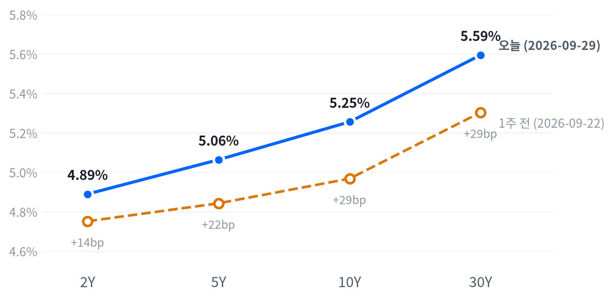

화요일 뉴욕 증시는 보합권에서 이틀째 내렸다. 컨퍼런스보드 9월 소비자신뢰가 예상을 크게 밑돌고 윌리엄스 뉴욕연은 총재가 "서두를 필요가 없다"고 말하자 2년물 금리는 내렸지만, 30년물은 장중 2002년 이후 최고로 올랐다(Bloomberg·CNBC).
유가가 내리고 기대인플레도 제자리인 날이라 장기물은 연준 경로가 아닌 기간프리미엄으로 가격이 매겨진다고 본다. 이 판단은 9월 30일 PCE와 10월 2일 고용보고서 날 두 만기가 갈라지는지로 확인한다.
이날 시장을 정한 것은 주가가 아니라 국채 커브였다. 10:00(ET) 소비자신뢰가 2014년 이후 최저로 떨어지고 14:00 윌리엄스 총재가 서두를 필요가 없다고 말하는 사이 2년물 금리는 3.5bp 내렸다. 30년물은 거꾸로 3.2bp 올랐고, Bloomberg와 CNBC는 장중 수준이 2002년 이후 최고라고 전했다. 주식은 그 사이에서 방향을 잡지 못하고 소폭 내렸다.
장기물 상승은 유가로도, 연준 경로로도 설명되지 않는다고 판단한다. 같은 날 11월물 브렌트는 2.6% 내렸고 기대인플레는 1bp 오르는 데 그쳤으며, 단기 정책 기대는 오히려 낮아졌다. 남는 설명은 대규모 발행과 재정 부담, 해외 장기금리가 얹는 기간프리미엄이다. Bloomberg도 장기물 상승의 원인으로 이 요인들을 함께 들었다. 시장이 연준에 거는 기대는 한 숫자로 읽히지 않는다. 보도된 10월 인상 확률은 대체로 낮아졌지만 출처마다 수준이 크게 엇갈렸다. 분기말 리밸런싱 잡음이나 영국 길트 같은 글로벌 장기금리 동조도 하루 자료로는 배제하지 못한다.
이 판단을 가장 직접 담는 수단은 5년물 대비 30년물 스티프너(현물 또는 국채 선물)다. 그래도 지금은 관찰로 둔다. 2s10s가 한 주 사이 15bp 벌어져 움직임의 상당 부분이 이미 가격에 들어갔을 수 있고, 듀레이션을 맞출 비율과 레포 조달비용, 분기말 레포 변동 위험을 잴 자료가 없다. 시계는 9월 30일 PCE부터 10월 9일까지다. 주식은 최고권 근처에서 거의 움직이지 않아 오늘 새로 판단할 거리가 적다. AI 하드웨어는 9월 30일 장 마감 뒤 마이크론 실적과 10월 1일 정규장 반응을 보고 판단한다.
약한 지표가 나온 날 2년물과 30년물이 비슷한 폭으로 함께 내려 5s30s가 53.1bp 아래로 좁혀지면 기간프리미엄 판단은 틀린 것이다. 기대인플레가 크게 올라 장기물 상승을 대부분 설명하는 날이 오면 물가 보상 경로 쪽으로 고친다. 두 만기가 함께 오르는 날은 어느 쪽도 가려 주지 않으므로 판단을 미룬다.
| 지수 | 종가 | 등락률 | 기준일 |
|---|---|---|---|
| 닛케이225 | 65,877.62 | -0.73% | 9월 28일 |
| 항셍 | 24,642.51 | +0.54% | 9월 28일 |
| 상해종합 | 3,823.62 | -1.67% | 9월 28일 |
| DAX | 25,374.42 | -0.13% | 9월 28일 |
| FTSE100 | 10,684.90 | -0.10% | 9월 28일 |
| 유로스톡스50 | 6,301.28 | -0.02% | 9월 28일 |
| VIX | 16.04 | -0.19% | 9월 29일 |
아시아·유럽 지수는 확보된 가장 최근 마감인 9월 28일 기준이다. VIX는 9월 29일 마감 기준이다.
미국은 아시아의 약세를 이어받았다. 가장 최근 마감인 9월 28일 아시아 세 지수는 평균 0.62% 내렸고, 지역 안에서도 갈렸다(항셍 +0.54%, 상해종합 -1.67%). 유럽은 세 지수가 모두 0.1% 안팎에서 끝나 사실상 멈춰 있었다.
야간 선물은 오름세였다. S&P500 선물(ES)은 01:30(ET) 7,716에서 07:30 7,771까지 올랐다. 나스닥100 선물(NQ)은 같은 01:30 저점에서 08:00 고점까지 1.14% 폭으로 움직였다. 선물 저점은 WTI가 하루 고점을 찍고 밀리기 시작한 시각과 겹친다. CNBC는 이 무렵 사우디 홍해 항구의 원유 수출이 회복되고 있다고 전했다. 현물은 대형주 지수 +0.21%, 나스닥 +0.33%, 러셀2000 +0.09% 갭으로 올라 출발했다.
세 지수 모두 개장가가 하루 고점이었고, 하루 범위의 중간쯤에서 끝났다. 오후 1시 무렵 저점에서 일부를 되찾았지만 개장가 근처로는 돌아가지 못해, 매도가 끝까지 몰리지도 반등이 이어지지도 않았다.
고점권·저점권 경계는 최근 2,253거래일의 일간 종가 위치 이력을 사분위로 나눠 다시 잰 기준이다.
이날은 지표 발표와 연준 발언이 단기 금리를 움직였고, 주식은 그 영향을 크게 받지 않았다. 10:00 소비자신뢰와 JOLTS 발표 뒤 지수는 오후 1시 무렵까지 밀렸다. TheStreet은 러셀2000 약세의 이유로 금리 상승과 약한 소비자신뢰·고용 지표를 들었다. 저점은 윌리엄스 총재 연설(14:00) 전에 나왔다. 오후 반등이 연설 뒤에 이어졌다는 순서만 있을 뿐, 반등을 연설 덕으로 돌릴 근거는 없다. 장 마감 뒤에는 가격을 움직인 발표가 확인되지 않았고, 다음 재료는 9월 30일 08:30 PCE와 같은 날 장 마감 뒤 마이크론 실적이다.
주식과 금리는 최근 60거래일 동안 느슨하게 반대로 움직여 왔다(상관계수 -0.435, 직전 60거래일 -0.558).
| 지수 | 종가 | 등락률 |
|---|---|---|
| S&P500 성장주 | 142.34 | +0.09% |
| 나스닥 | 26,797.54 | -0.09% |
| S&P500 | 7,670.84 | -0.17% |
| 다우존스 | 51,349.92 | -0.26% |
| 러셀2000 | 2,807.92 | -0.35% |
| S&P500 가치주 | 229.34 | -0.49% |
| 섹터 | 등락률 |
|---|---|
| 유틸리티 | +1.17% |
| 커뮤니케이션서비스 | +0.26% |
| 산업재 | +0.21% |
| 경기소비재 | +0.14% |
| 기술 | -0.02% |
| 부동산 | -0.02% |
| 헬스케어 | -0.31% |
| 금융 | -0.33% |
| 필수소비재 | -0.52% |
| 소재 | -0.75% |
| 에너지 | -0.90% |
S&P500은 7,671로 이틀째 내렸지만 최근 2년(504거래일) 가운데 이보다 높았던 날이 27일뿐인 자리에 있고, 나스닥은 이보다 높았던 날이 13일뿐이다. 오늘 낙폭은 세 지수 모두 평소 하루 움직임에 한참 못 미쳐 미미했다. 한 달로 보면 기술 섹터가 4.87% 오르는 사이 금융(-6.71%)과 소재(-7.25%)가 크게 밀렸고, 지수의 높이는 여전히 기술 한 업종이 받친다.
대형주 지수는 7,700선 바로 아래 개장가가 그대로 하루 고점이었다. 오전 지표 발표 뒤 밀리기 시작해 13:00(ET) 7,654까지 0.60% 내렸고, 이후 낙폭 일부를 되찾았다. 나스닥은 저점까지 0.70%, 러셀2000은 0.92% 밀려 소형주가 가장 약했다. 엔비디아는 개장 직후 233달러 가까이 올랐다가 오후 늦게까지 밀려 저점 부근에서 끝났다.
지수 하락을 만든 업종은 따로 없었다. 0.17% 하락 가운데 아홉 섹터의 기여를 모두 더하면 거의 0이다. 유틸리티(+0.04%포인트)와 커뮤니케이션서비스(+0.03%포인트)가 받치고 금융(-0.04%포인트)과 헬스케어(-0.03%포인트)가 깎았을 뿐이다. 설명되지 않는 부분이 -0.16%포인트로 하락의 대부분을 차지한다. 섹터 평균에 잡히지 않는 대형 종목의 엇갈림이 그 몫일 수 있다(애플 -2.66%, 메타 +3.24%).
섹터 기여는 최근 252거래일 회귀로 추정했다. 소재·부동산은 추정에서 식별되지 않아 뺐다.
하락의 결은 방어적이었다. 가치주(-0.49%)가 성장주(+0.09%)보다 약했고, 유틸리티가 1.17% 올라 섹터 1위를 했다. 유틸리티 상승은 원자력규제위원회(NRC)가 TVA에 소형모듈원전 건설허가를 내준 날과 겹치지만(PRNewswire), 업종 전체와의 인과는 확인되지 않았다. 에너지는 유가 하락을 따라 가장 약했다. Investrade는 Anthropic 상장 투자설명서 유출 보도와 OpenAI 매출 보도가 기술주 심리를 떠받쳤다고 해석했다. 금리가 최고권으로 올라선 날에도 지수가 하루 범위 중간에서 끝나, 최고권 추세가 꺾였다고 볼 근거는 아직 약하다고 판단한다.
| 만기 | 종가 | 전일比(bp) | 1주 전 | 주간 변화(bp) |
|---|---|---|---|---|
| 2Y | 4.889% | -3.5 | 4.751% | +13.8 |
| 5Y | 5.063% | -0.7 | 4.842% | +22.1 |
| 10Y | 5.255% | +1.3 | 4.967% | +28.8 |
| 30Y | 5.594% | +3.2 | 5.303% | +29.1 |
네이버 국채 종가 기준(2026-09-29, 전 만기 동일 기준일). 1주 전은 9월 22일.

1주 전(9월 22일) 대비 전 만기가 올랐고, 10년물과 30년물이 2년물보다 두 배 넘게 올라 커브가 가팔라졌다(베어 스티프닝).
10년물(5.255%)과 30년물(5.594%)은 최근 2년(504거래일)을 통틀어 가장 높은 자리에서 끝났다. 30년물은 장중 5.61%를 넘었고, Bloomberg는 30년물이 6거래일 연속 올랐다고 전했다. 이 자리까지 오는 데 한 주면 충분했다. 9월 22일보다 10년물은 28.8bp, 30년물은 29.1bp 올랐다.
하루로는 커브의 모양이 바뀌었다. 2년물이 내리고 30년물이 올라 2s10s는 36.6bp로 전 거래일보다 4.8bp, 5s30s는 53.1bp로 3.9bp 벌어졌다. 네 만기가 같은 폭으로 뛴 전날의 평행 이동과 달리, 오늘은 단기 정책 기대가 내려가는 동안 장기 쪽이 따로 올랐다. 한 주로 넓히면 이 스프레드는 21.6bp에서 15.0bp 벌어져 베어 스티프닝이 이어진다. 30년물의 오늘 상승은 평소 하루 움직임과 비슷한 보통 크기였다.
2년물 하락은 10:00 지표와 14:00 윌리엄스 발언이 겹친 결과로 본다. GuruFocus는 단기물 하락을 윌리엄스 발언 탓으로 보도했고, Daily Economics는 소비자신뢰와 JOLTS 약세도 함께 들었다. 장기물 상승의 원인으로 Bloomberg는 유가발 인플레 우려, 대규모 국채 발행, 재정 불안, 글로벌 채권 매도를 한데 묶었다. 이날 유가는 내렸고 10년 기대인플레(2.35%)와 5년 뒤 5년 기대인플레(2.36%)는 1bp씩 오르는 데 그쳤다. 적어도 이날은 물가 보상으로 장기물 상승을 설명하기 어렵다. 장중 금리 경로가 없어 지표와 발언 가운데 무엇이 2년물을 더 밀었는지는 가르지 못한다.
같은 날짜로 맞춘 가장 최근 분해(9월 28일 기준)에서 10년물 명목금리 하루 상승 7bp는 전부 실질금리 몫이었고 기대인플레 몫은 0bp였다. 한 주로 봐도 28bp 전부가 실질금리였다. 9월 29일 하루의 내역은 실질금리가 갱신돼야 갈린다. 10년 기간프리미엄은 9월 25일 기준 1.02%포인트로 오늘 움직임을 설명할 만큼 새로운 값이 아니다.
신용시장은 한 주 내내 넓어졌다. 하이일드 스프레드는 9월 28일 기준 3.02%포인트로 하루 9bp, 한 주 36bp 벌어졌고 투자등급은 0.83%포인트로 하루 2bp 넓어졌다. 9월 29일 단기물 입찰은 무난했다(52주물 응찰배율 3.07배·간접 낙찰 63.0%, 6주물 2.82배·58.9%). 이번 주에는 남은 이표채 입찰이 없어, 장기물 수급을 가늠할 다음 입찰 결과는 다음 주 이후에 나온다.
5년 뒤 5년 명목금리는 9월 28일 기준 5.42%로 하루 6bp 올랐고, 실질 기준으로는 3.07%다. 기대인플레 지표와의 교차검증은 이번에 할 수 없었다. 위험 프리미엄이 섞인 값이라, 시장이 먼 구간 금리를 이 수준에서 거래한다는 정도로 읽는다.
| 통화쌍 | 종가 | 등락률 |
|---|---|---|
| DXY | 101.38 | +0.17% |
| USD/KRW | 1,359.56 | +0.37% |
| USD/JPY | 157.36 | -0.06% |
| EUR/USD | 1.1373 | -0.05% |
원/달러는 1,360원으로 올랐어도 최근 두 해 가운데 이보다 낮았던 날이 23일뿐인 원화 강세 자리에 있다. 달러지수와 엔/달러는 같은 기간의 한가운데쯤이다. 오늘 달러는 달러지수와 원화에 대해 여느 날 움직임의 절반을 조금 넘는 폭으로 올랐고, 엔과 유로에 대해서는 거의 움직이지 않았다.
달러 강세는 금리차로 설명되지 않는다. 2년물 금리가 내린 날이라 단기 금리차는 오히려 달러에 불리하게 움직였다. 주식이 소폭 내린 정도로는 위험회피 수요라고 부르기도 어렵고, 달러지수와 원화 약세 모두 개별 재료를 찾지 못했다. 주식과 달러는 최근 60거래일 동안 느슨하게 반대로 움직여 왔고 오늘도 그 관계를 벗어나지 않았다. 9월 30일 PCE 뒤 2년물과 달러지수가 같은 방향으로 움직이는지가 금리차 경로를 다시 확인할 자료다.
엔/달러는 11:00(ET) 157.72엔 고점에서 13:00 156.98엔까지 밀렸다가 157엔대 중반으로 돌아왔다. 엔 강세 쪽 저점이 주가지수 저점과 같은 시각에 나와, 지표 발표 뒤 미국 금리가 내려간 흐름과 방향이 맞는다.
주식과 달러의 최근 60거래일 상관계수 -0.333(직전 60거래일 -0.53).
| 품목 | 종가 | 등락률 |
|---|---|---|
| WTI | $89.37 | -3.49% |
| Brent(12월물) | $96.12 | 월물 교체로 비교 불가 |
| 천연가스 | $3.025 | +0.83% |
| 금 | $4,212.70 | +1.06% |
브렌트 종가는 근월물이 11월물에서 12월물로 바뀐 뒤의 가격이다. 전 거래일 값(11월물 105.28달러)과의 차이는 두 계약의 가격 차이라 하루 등락률로 싣지 않는다. Rigzone·CNBC 기준 11월물 정산가는 102.59달러다.
WTI는 89.37달러로 3.49% 내렸어도 최근 2년(504거래일) 가운데 높은 쪽 16% 안에 머문다. 종가 기준 하락은 평소 하루 움직임과 비슷한 크기였지만 장중 폭은 더 컸다. 01:30(ET) 94.74달러 고점에서 밀리기 시작해 장 마감 뒤 18:00에는 88.58달러까지 내려 시가보다 5.8% 낮았다.
유가 하락은 공급 회복 쪽 재료로 판단한다. Bloomberg와 CNBC는 사우디 동서 파이프라인이 다시 흐르기 시작했다고 전했고, JPMorgan은 중동 원유 수출이 하루 1,750만 배럴로 전쟁 전의 98%까지 회복했다고 추정했다. 미국과 이란은 카타르 중재로 간접 회담을 했고, 트럼프 대통령은 전날 수정 휴전안을 받아들일 수 없다고 했다가 29일에는 협상이 빠르게 진행될 것이라고 말했다(CNBC). 디젤 쪽에서는 에너지장관이 정유사들에 수출 자제 의향을 타진했지만, 백악관은 90일 수출금지 보도를 부인했다(Bloomberg).
브렌트는 표의 숫자로 오늘 등락을 읽을 수 없다. 근월물이 11월물에서 12월물로 넘어가며 표의 종가가 한 계약 아래로 내려앉았다. 같은 월물로 보면 11월물은 2.6% 내려 WTI와 같은 방향이었다. 9월 29일 장중 호가 기준으로 11월물과 12월물 사이에는 약 7.5달러의 백워데이션이 있었고, 당장 인도분이 그만큼 비싸게 거래됐다. WTI와 브렌트의 스프레드는 월물이 어긋나 오늘은 같은 기준으로 비교하지 않는다. 천연가스(+0.83%)는 개별 재료를 확인하지 못했다.
금은 4,213달러로 1.06% 올라 같은 기간의 한가운데쯤에 있다. 새벽 01:30(ET) 4,153달러 저점에서 하루 내내 올라 16:30 고점 부근에서 끝났다. 금과 금리는 최근 60거래일 동안 느슨하게 반대로 움직여 왔고, 오늘 금의 상승은 2년물 금리와 보도된 인상 확률이 내려간 쪽과 방향이 맞는다. 금이 실질금리를 따라 올랐는지는 9월 29일 실질금리가 갱신돼야 확인된다.
금과 금리의 최근 60거래일 상관계수 -0.327(직전 60거래일 -0.307).
미국 경기 국면은 성장과 물가가 모두 둔화 방향인 연착륙을 9월 1일부터 21영업일째 유지한다. 오늘은 JOLTS 8월 구인과 소매판매 연간 개정이 새로 들어와 국면을 한 칸 옮길 수 있는 날이었지만 옮기지 않았다. 성장 점수(-0.114)는 둔화 경계 안쪽이라 보합을 가리킨다. 그러나 두 발표 모두 성장 점수를 9월 25일의 -0.065에서 더 아래로 끌어내렸고, 새 지표가 약해진 날 성장 좌표를 한 칸 올리는 것은 자료의 방향과 반대라고 판단한다.
성장 지표 열넷 가운데 개선 쪽은 여섯에 그친다. 점수에 들지 않는 컨퍼런스보드 소비자신뢰도 같은 날 12년 만의 최저로 떨어졌다. 물가 점수(-0.648)는 여덟 가운데 여섯이 둔화 쪽이라 둔화에 머문다. 성장 좌표는 9월 30일 PCE의 실질 소비와 10월 2일 고용상황을 본 뒤 다시 판단한다.
고용은 개선 쪽이지만 힘은 미미하다(7개 중 4개). 계속 실업수당 청구가 4주 평균으로 뚜렷하게 줄었고(최근 1,719,000건), 실업률은 4.1%로 석 달 평균이 완만하게 내려왔다. 새로 나온 JOLTS 구인은 반대편에 섰고, 8월 비농업 고용도 늘었지만 석 달 평균으로는 완만한 악화다. 고용축 +0.27
| 지표 | Actual | Forecast | Previous | 발표일 | 컨센 대비 | 직전 대비 | 추세 |
|---|---|---|---|---|---|---|---|
| 구인건수(8월) | 7,079K | 7,225K | 7,335K | 2026-09-29 | 하회▼ | 악화 | 악화(미미) · 3개월 평균 7,336K → 7,199K |
| 신규 실업수당 청구 | 197,000 | — | 198,000 | 9월 19일 주간 | 개선 | 개선(미미) · 4주 평균 206K → 202K | |
| 신규 청구 4주 평균 | 202,250 | — | 204,000 | 9월 19일 주간 | 개선 | 악화(미미) · 4주 평균 202K → 205K | |
| 계속 실업수당 청구 | 1,719,000 | — | 1,717,000 | 9월 12일 주간 | 악화 | 개선(뚜렷) · 4주 평균 1,787K → 1,744K | |
| 비농업 고용 변화(8월) | +162K | — | +21K | 2026-08 기준월 | 개선 | 악화(완만) · 3개월 평균 +142K → +71K | |
| 실업률(8월) | 4.1% | — | 4.1% | 2026-08 기준월 | 보합 | 개선(완만) · 3개월 평균 4.30% → 4.13% | |
| 평균시간당임금 MoM(8월) | +0.27% | — | +0.16% | 2026-08 기준월 | 개선 | 개선(완만) · 3개월 평균 +0.20% → +0.23% |
BLS에 따르면 8월 구인건수는 707.9만 건(7079K)으로 전월(733.5만 건)과 investinglive가 전한 예상치(722.5만 건)를 모두 밑돌았다. BLS 자신은 구인 규모와 구인율(4.3%)이 거의 변하지 않았다고 서술했다.
세부는 정체다. 채용은 520만 건(채용률 3.3%), 자발적 이직은 310만 건(1.9%), 해고는 160만 건(1.0%)으로 모두 제자리였다. 감소폭이 커 보인 것은 7월 구인이 6만4천 건 상향 수정된 탓이 크다. 자발적 이직은 도매(-3.4만 건)와 주·지방정부 교육(-2.1만 건)에서 줄었다.
채용도 해고도 적은 정체가 이어진다고 본다. 해고율 1.0%는 급랭 신호가 아니고, 자발적 이직률이 그대로라 임금 압력이 줄었다는 근거로도 약하다. 이 발표는 성장 점수를 조금 끌어내렸고 10월 인상의 급박함을 낮추는 쪽으로 읽혔지만(Daily Economics), 국면을 옮길 만한 크기는 아니었다.
생산·활동은 보합이다(5개 중 1개 개선). 내구재 주문이 8월 -0.02%로 석 달 평균이 완만하게 꺾였고, 기존주택 판매(398만 건)도 미미하게 줄었다. 신규주택 판매는 684K로 미미하게 개선돼 반대편에 섰다. 생산·활동축 -0.193
| 지표 | Actual | Forecast | Previous | 발표일 | 컨센 대비 | 직전 대비 | 추세 |
|---|---|---|---|---|---|---|---|
| 산업생산 MoM(8월) | +0.02% | — | +0.20% | 2026-08 기준월 | 악화 | 보합 · 3개월 평균 +0.24% → +0.14% | |
| 내구재주문 MoM(8월) | -0.02% | — | +0.86% | 2026-08 기준월 | 악화 | 악화(완만) · 3개월 평균 +1.95% → +0.47% | |
| 신규주택판매(8월) | 684K | — | 643K | 2026-08 기준월 | 개선 | 개선(미미) · 3개월 평균 645K → 666K | |
| 기존주택판매(8월) | 398만 | — | 406만 | 2026-08 기준월 | 악화 | 악화(미미) · 3개월 평균 4,080K → 4,057K | |
| 실질GDP QoQ 연율(2분기) | +1.5% | — | +2.1% | 2026년 2분기 기준 | 악화 | — |
소비는 악화다(2개 중 1개 악화). 소매판매가 8월 1.13% 늘었지만 석 달 평균이 앞 석 달보다 뚜렷하게 낮아졌고, 미시간대 소비자심리(51.7)는 석 달 평균으로 미미하게 나아졌다. 점수에 들지 않는 컨퍼런스보드 9월 소비자신뢰는 81.9로 예상(89.2)을 크게 밑돌았다. 심리는 12년 최저인데 명목 지출은 강한 괴리가 이 축의 쟁점이다. 소비축 -0.419
| 지표 | Actual | Forecast | Previous | 발표일 | 컨센 대비 | 직전 대비 | 추세 |
|---|---|---|---|---|---|---|---|
| 소매판매 MoM(8월) | +1.13% | — | -0.46% | 2026-09-28 연간 개정 | 개선 | 악화(뚜렷) · 3개월 평균 +1.09% → +0.29% | |
| 미시간대 소비자심리(8월) | 51.7 | — | 55.2 | 2026-08 기준월 | 악화 | 개선(미미) · 3개월 평균 49.3 → 52.1 | |
| 컨퍼런스보드 소비자신뢰(9월) | 81.9 | 89.2 | 88.6 | 2026-09-29 | 하회▼ | — | — |
Census는 9월 28일 연간 개정에서 8월 소매판매 증가율을 1.13%로, 7월을 -0.46%로 고쳤다. 9월 16일 속보치는 각각 +1.2%와 -0.5%였다. 새 달의 발표가 아니라 과거치 개정이다.
자동차를 뺀 판매는 개정 후 1.283%(전월 -0.159%)로 속보치 1.4%보다 조금 낮다. 개정 후 품목별 수치는 원문을 확보하지 못해, 구성은 개정 전 속보치로 본다. 속보치에서 주유소 매출은 전월보다 3.1%(전년 대비 21.0%) 늘었고 무점포 판매가 2.6%, 자동차·주유소 제외 판매가 1.2% 늘었다. 주유소를 빼도 1.1% 늘어 유가만의 착시는 아니었다.
개정 뒤에도 7월 감소와 8월 반등의 모양은 그대로라 소비 판단을 바꾸지 않는다. 이 개정은 석 달 추세를 악화 쪽으로 조금 더 밀어 성장 점수를 낮췄다. 물가를 뺀 실질 소비는 9월 30일 PCE가 보여 준다.
물가는 완만한 둔화다(8개 중 6개 둔화). 소비자물가 전월비는 8월 0.4%로 올랐지만 석 달 평균이 앞 석 달보다 뚜렷하게 낮아졌고, 생산자물가(0.4%)도 같은 모양이다. 7월 PCE 물가 전년비(3.7%)는 석 달 평균이 올라 재가속 쪽에 서 있다. 물가축 -0.648
| 지표 | Actual | Forecast | Previous | 발표일 | 컨센 대비 | 직전 대비 | 추세 |
|---|---|---|---|---|---|---|---|
| CPI YoY(8월) | 3.71% | — | 3.54% | 2026-08 기준월 | 상승 | 교착 · 3개월 평균 3.85% → 3.66% | |
| CPI MoM(8월) | +0.40% | — | +0.07% | 2026-08 기준월 | 상승 | 둔화(뚜렷) · 3개월 평균 +0.66% → +0.02% | |
| Core CPI YoY(8월) | 2.76% | — | 2.79% | 2026-08 기준월 | 하락 | 교착 · 3개월 평균 2.87% → 2.79% | |
| Core CPI MoM(8월) | +0.29% | — | +0.22% | 2026-08 기준월 | 상승 | 둔화(완만) · 3개월 평균 +0.26% → +0.16% | |
| PPI 최종수요 MoM(8월) | +0.40% | — | +0.07% | 2026-08 기준월 | 상승 | 둔화(뚜렷) · 3개월 평균 +0.79% → +0.12% | |
| PCE 물가 YoY(7월) | 3.70% | — | 3.72% | 2026-07 기준월 | 하락 | 재가속(완만) · 3개월 평균 3.41% → 3.84% | |
| Core PCE YoY(7월) | 3.34% | — | 3.34% | 2026-07 기준월 | 보합 | 재가속(미미) · 3개월 평균 3.21% → 3.38% | |
| 미시간대 1년 기대인플레(8월) | 4.0% | — | 4.2% | 2026-08 기준월 | 하락 | 교착 · 3개월 평균 4.43% → 4.27% |
직전 대비는 Actual을 Previous와 비교한 것이고, 추세는 최근 3개월 평균을 그 앞 3개월 평균과 비교한 것입니다(주간 실업수당 청구는 4주 평균끼리). 추세의 세기는 그 지표가 평소 움직이는 폭에 견준 크기이고, 작은 변화는 보합으로 봅니다. 분기 지표인 GDP는 두 비교가 같은 숫자를 보므로 직전 대비만 싣습니다.
연준의 다음 수는 연내 한 차례 추가 25bp 인상이라는 판단을 유지하고, 시점은 10월 28일 FOMC 하나로 좁히지 않고 12월 9일 FOMC까지 넓혀 본다. CME FedWatch 기준 10월 인상 확률은 9월 29일 매체와 시각에 따라 47.1%(Daily Economics)부터 76.9%(growbeansprout 집계)까지 엇갈렸다. 윌리엄스 발언 뒤 GuruFocus가 전한 값은 68%였다. 12월까지 한 번 더 오른다는 확률은 94.5~95%(TheStreet·GuruFocus)로 일관된다.
Reuters는 윌리엄스 총재가 한 번 더 인상을 기본 시나리오로 두면서도 서두를 필요는 없다고 말했다고 전했다. 인상 자체보다 그 시점이 흔들린 하루라고 본다.
9월 30일 근원 PCE가 전월 대비 0.3% 컨센서스를 밑돌고 10월 2일 고용이 예상(10만 명)을 크게 밑돌아 실업률이 4.2%를 넘으면 인상 우위 판단을 재검토한다. 두 지표가 모두 예상을 웃돌면 시점을 다시 10월 쪽으로 당긴다.
물가 둔화가 실질금리 정점과 완화 재개 기대로 이어진다는 판단에서 채권과 귀금속을 우호로 둔다. 그 경로는 아직 가격에 닿지 않았다. 장기물은 정책 경로보다 기간프리미엄에 끌려가고 있고, 가장 최근 분해에서도 한 주 상승이 모두 실질금리 몫이었다. 근원 PCE 전년비가 3.0% 아래로 내려오거나 30년물이 5.05% 아래로 돌아와야 이 판단이 확인되는데, 7월 근원 PCE(3.34%)는 아직 멀다.
주식과 에너지는 중립이다. 성장이 둔화 쪽에 머물고 물가도 둔화하면서 이익 기대와 밸류에이션 부담이 맞선다. 소비 심리는 12년 최저로 꺾였는데 8월 명목 소매판매는 늘어, 최종수요가 어느 쪽으로 기울지 아직 가릴 수 없다. 에너지는 공급 쪽 사건이 가격을 정하고 있어 수요 경로로 방향을 잡기 어렵다. ISM 제조업 PMI가 50을 웃돌며 재가속하거나 10년물이 4.5% 아래로 내려와야 주식 쪽 판단이 바뀐다.
달러는 비우호로 둔다. 물가 둔화가 이어지면 실질금리 차가 좁혀져 달러가 약해진다는 경로다. 연준이 인상 기조를 이어 가 미국 금리 수준이 이 경로를 막고 있어, 달러지수가 20거래일 동안 3% 이상 더 내리거나 FedWatch에 인하 확률이 다시 나타나야 확인된다.
메모리는 우호, AI 인프라는 중립이다. 이 그룹은 매크로 국면과 따로 움직인다. 데이터센터 투자가 D램과 HBM 수급을 끌고, AI 인프라는 높은 장기금리가 그 힘을 상쇄한다. 확인 지표로 걸어 둔 30년물 5.4%는 이미 넘었지만 AI 인프라가 금리와 함께 무너지지 않아 중립을 지킨다. 9월 30일 마이크론 실적이 FactSet 컨센서스(매출 510.7억 달러)를 넘고 가이던스를 올리면 메모리 판단이 확인된다.
10:00 JOLTS와 소비자신뢰가 함께 예상을 밑돈 뒤 주가지수는 오후 1시 무렵까지 밀렸다. 2년물은 종가 기준으로 내렸고 30년물은 올라, 약한 지표가 단기 금리에만 반영됐다. 장중 금리 경로가 없어 지표 직후 반응과 윌리엄스 발언 뒤 반응은 나누지 못한다. 9월 28일 소매판매 개정에 대한 가격 반응은 확인하지 못했다.
경제지표 발표 일정은 공식 일정표로 확인하지 못해 보도 기준으로 적었다.
애플(-2.66%)이 지수를 가장 크게 끌어내렸다. Yahoo Finance에 따르면 BofA는 메타 뮤즈 같은 AI 에이전트가 온라인 구매를 애플 생태계 밖으로 옮길 수 있다고 경고했다. invezz는 존 터너스 CEO가 경영 구조와 신제품 출시 주기 변경을 검토한다는 보도가 겹쳤다고 전했다.
메타(+3.24%)는 반대편에서 지수를 받쳤다. CNBC에 따르면 메타는 Asana·Zoom·Intuit·Slack 등과 연결되는 소상공인용 「Muse for Small Business」를 내놨다. 애플의 하락과 메타의 상승은 같은 AI 에이전트 재료의 양면으로 읽힌다.
엔비디아(-0.72%)는 지수를 끌어내린 쪽이었다. 확인된 재료는 없다.
브로드컴(+1.58%)은 지수를 받친 쪽이었다. 확인된 재료는 없다.
블룸에너지(+10.8%)는 거래대금 상위 종목 가운데 가장 크게 올랐다. Benzinga에 따르면 제프리스는 보유 의견을 유지하면서 목표가를 229달러에서 264달러로 올렸고, 브룩필드의 250억 달러 금융 약정과 AEP의 26.5억 달러 확정 주문, 연말 2GW 설치를 근거로 들었다.
메모리·AI 인프라 바스켓의 최근 20거래일 초과수익은 대부분 반도체 업종 자체의 움직임으로 설명된다. AI 인프라는 초과수익 9.00%포인트를 반도체 축(+12.88%포인트)이 끌어올리고 대형−소형 축(-6.08%포인트)이 깎았으며, 성장−가치 축이 +2.80%포인트를 보탰다. 메모리는 초과수익 8.17%포인트 가운데 반도체 축이 16.21%포인트를 설명하고, 세 축으로 설명되지 않는 몫은 -4.99%포인트다. 수익이 스타일보다 업종에 실려 있어, 마이크론 실적 같은 업종 고유 재료에 그만큼 크게 흔들린다.
하루치 초과수익의 20거래일 합을 60거래일 계수로 나눈 값이다. 메모리의 성장−가치·대형−소형 축은 252거래일 계수와 방향이 달라 인용하지 않았다. 시장 민감도는 메모리 2.125, AI 인프라 3.008.
오늘 새로 연 질문은 장기물이 연준 경로와 유가에서 떨어져 기간프리미엄으로 가격이 매겨지는가다. 2년물이 내리고 유가가 떨어졌으며 기대인플레가 1bp만 움직인 날 30년물이 올랐다는 관찰이 출발점이다. 대안은 셋이다. 분기말(9월 30일) 리밸런싱 전후의 포지셔닝 잡음일 수 있다. 기대인플레 지표에 잡히지 않는 인플레 위험 프리미엄일 수도 있고, 영국 길트 같은 글로벌 장기금리 동조일 수도 있다(ING는 길트 10년물 5.4%를 짚었다). 하루 자료로는 어느 것도 배제하지 못한다. 9월 30일 PCE와 10월 2일 고용보고서 날 2년물이 내리는데 30년물이 보합이거나 오르고 5s30s가 53.1bp 이상에서 버티면 지지로 본다. 두 만기가 비슷하게 같이 내려 스프레드가 좁혀지거나 기대인플레가 장기물 변화를 대부분 설명하면 약화로 본다. 마감은 10월 9일 17:00 ET다.
9월 25일에 연 질문은 호르무즈 협상 뉴스가 FedWatch 10월 인상 확률, 2년물, 커브 스티프닝을 함께 움직이는가였다. 두 번째 시험인 오늘도 방향은 지지됐다. 공급 회복 보도로 유가가 내리자 2년물이 내렸고, 보도된 인상 확률도 전날보다 대체로 낮아졌다. 유가는 전날 적어 둔 대로 같은 월물(11월물) 정산가로 비교했다. 처음으로 스티프닝 다리도 나타났다. 메커니즘은 여전히 가릴 수 없다. 같은 날 10:00 지표와 14:00 윌리엄스 발언만으로도 2년물 하락이 설명되고, FedWatch 수치는 매체와 시각이 달라 같은 조건의 비교가 아니며, 장중 금리가 없어 시각별로 떼어 낼 수도 없다. 원래 질문이 장기물 쪽에 가정한 성장 서사는 약한 성장 지표에도 30년물이 오른 오늘과 맞지 않아, 그 부분은 위의 새 질문으로 넘겼다. 마감은 10월 9일이고, PCE·고용 날 유가와 2년물의 방향을 다시 본다.
9월 22일에 연 질문은 FOMC 인상 뒤 메모리·AI 인프라가 금리 민감 업종과 따로 움직이는가였다. 오늘은 방향도 메커니즘도 판정하지 않는다. 10년물이 종가 기준 새 고점을 쓴 날 AI 인프라 다섯 종목이 모두 올랐지만(마벨 +4.51%, 루멘텀 +5.66%, 코히런트 +3.46%), 10년물 하루 변화가 미미해 금리 충격일로 볼 수 없다. 반등에는 씨티의 마벨 매수 의견 재확인과 전날 광통신 매도의 되돌림 같은 종목 재료가 있었다(24/7 Wall St). 9월 23·24·28일 세 번의 동반 하락을 하루 반등이 뒤집지 못한다. 마감은 10월 28일 FOMC다.
9월 28일에 연 질문은 반도체·AI 하드웨어의 초과 하락이 AI 수요 우려인지 금리발 밸류에이션 압축인지다. 시험 창은 아직 열리지 않았지만, 전날 비어 있던 서베이 컨센서스를 발표 전에 확보했다. FactSet 기준 마이크론 FQ4 매출 컨센서스는 510.7억 달러, EPS는 31.52달러로 회사 가이던스 중앙값(500억 달러)보다 높다. 가이던스 상단을 넘는 것만으로는 시장 기대를 넘었다고 할 수 없다는 뜻이다. 10년물이 내려오지 않았는데 AI 하드웨어가 실적 전에 되돌린 점은 전날 하락이 금리 압축만은 아니었다는 쪽에 약간 무게를 싣지만, 시험 전 관찰이라 판정은 미룬다. 옵션 내재 변동폭은 여전히 없다. 시험 창은 9월 30일 16:00 ET 실적 발표부터 10월 1일 16:00 ET 정규장 마감까지다.
네 질문 가운데 둘은 9월 30일 하루에 걸린다. 08:30 PCE로 2년물과 30년물의 반응을, 장 마감 뒤 마이크론 실적으로 AI 하드웨어의 방향을 본다. 10월 2일 고용보고서가 금리 쪽 두 질문의 두 번째 시험이다.
이 보고서의 시세는 Yahoo Finance와 네이버 국채 종가, 경제지표는 FRED와 각 발표 기관(BLS·BEA·Census 등), 그 밖의 내용은 본문에 밝힌 출처에서 가져왔다. 이 보고서는 투자 자문이 아니며 특정 자산의 매수·매도를 권유하지 않는다. 투자 판단과 그 결과에 대한 책임은 전적으로 투자자 본인에게 있다.